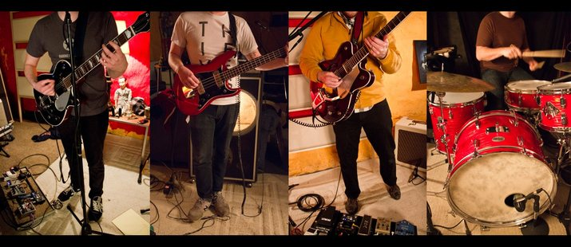
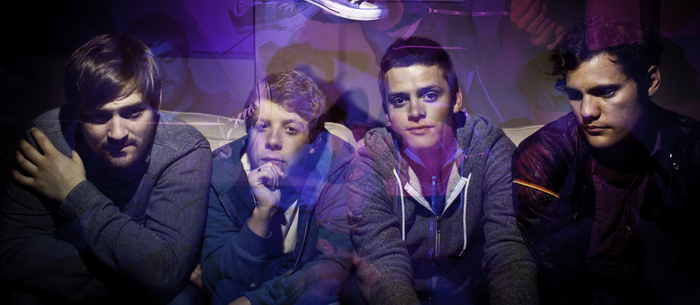
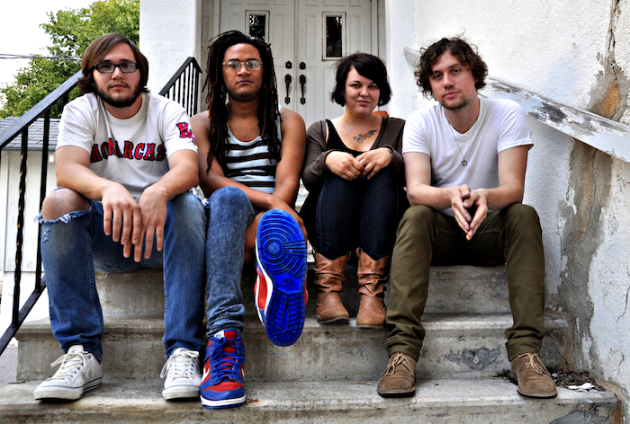
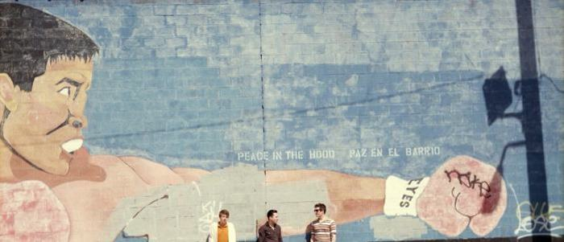

Howdy Neighbors!
Join us July 6th for the Crossroads Summer Block Party presented by Golden Sound Records! Enjoy an evening of live music, food, and festivities to celebrate Kansas City’s culture and its sweltering summers. We’re kicking things off around 4PM on 19th street in the Crossroads Arts District (between Wyandotte and Baltimore). Spend the evening chowing down on local food truck cuisine, hanging with friends & neighbors, and taking in the sounds of some of KC’s most dynamic local music.
Bring your friends & family to the First Fridays event of 2012, preceding the big game hosted at Kauffman Stadium, and discover a taste of what makes Kansas City and the Crossroads Arts District one-of-a-kind.
Schedule
-
Spirit Is The Spirit5:00 - 5:30

Kansas natives Spirit is the Spirit consist of six strapping young men bound by ambitions of auditory exploration. They’re armed with rollicking imagination, the nearly psychic foresight of their muse and protector Commander Coby, and aspirations to play the first concert in outer space. Spirit is the Spirit embraces the tension between their love of lush, pastoral arrangements, tender-hearted sing-along hooks, and an insatiable urge to build walls of soaring, gorgeous noise. Having grown up in an era when “alternative” was mainstream and conventional rock music was being picked apart and reworked in every conceivable direction, the band draws equally from the past century’s forebears of popular music and today’s lack of consensus about what’s acceptable from a rock band. Rooted in a dynamic rhythmic texture, Spirit is the Spirit’s reverb-ed out mid western folk pop incorporates unique elements that collectively construct an easy to digest, yet highly intelligent structure of soundscapes, harmonies and rhythms.
Website -
The Caves5:45 - 6:15
-
Millions Of Boys6:30 - 7:00
Omaha trio Millions of Boys bloomed out of Sara Bertuldo and Alex van Beaumont’s mutual friendship with Ryan Haas during the everlasting summer of 2010. Inside jokes, late nights, and an undying appreciation for punk fortified a nuclear chemistry that left them with haunting songs of contemplative love. Counting two boys to one, the trio soon had their hard work realized. The band’s first release, Competing for Your Love, exemplifies their eclectic yet cohesive sound in less than twenty-five minutes, and leaves you wondering how many more boys there could be.
Website -
Fullbloods7:15 - 7:45
Fullbloods is a rock and roll band pulling inspiration from all corners and time periods of the genre. The band consists of four trained audio engineers who pay respect to conventional rock and roll and aren’t afraid to beg borrow or steal, consulting a smattering of western and surf music along the way.
Website -
Everyday/Everynight8:00 - 8:30
Everyday/Everynight introduced themselves in the fall of 2009 with a lush, introspective debut record, Moon Phases, and have since continued to turn out mentally and emotionally stimulating indie rock. As the name implies, Everyday/Everynight explore a cycle of human existence; moments of wonder balanced by fits of chaos… From glowing anthems to raging art-punk the sound is nothing short of striking.
Website -
Cowboy Indian Bear8:45 - 9:15
Cowboy Indian Bear started off like most bands; in search of a name.
When members CJ Calhoun, Beau Bruns and Marty Hillard came together they couldn’t decide on a band name so they traded a buddy a six pack of beer for the one they settled on. For the Lawrence, Kansas-based trio, the name was essential. With featherweight melodies, ghost-like echoes and whirring rhythms they create an ethereal celebration that is tempered with a tinge of classic rock/pop. Reflective of the free association ethos of the music, Cowboy Indian Bear stands as the perfect name for its sprawling, ambitious sound.
The trio began working on material in April 2008. Building from demos that CJ and Beau compiled on the side of their previous project, the group quickly found themselves moving in a unique direction. With each member drawing from a variety of influences the resulting sound is, at once, a singular statement with timeless appeal. In February 2009 they released a self-titled, three-song EP to critical acclaim and a strong grassroots response from all over the Midwest.
Their refreshing take has allowed them to open for such esteemed artists as Peter Bjorn and John, The Appleseed Cast, Murder by Death, and The Republic Tigers. After signing to Kansas City label The Record Machine in early 2010, the band released a 7-inch split with It’s True!, a quintet from Omaha, NE. Eagerly awaiting the release of their full-length debut album “Each Other All The Time”, Cowboy Indian Bear is confident that a six pack was a small price to pay.
Website -
The Empty Spaces9:30 - 10:00
Formed from a studio band that recorded Mat Shoare’s solo album by the same name The Empty Spaces have been interpreting Shoare’s song writing since early 2010. Eventually the three piece began to collaborate more with song arrangements and stylistic choices yielding a kind of “retro-punk rock” that is fronted with an energetic, yelping vocal style.
Website -
Soft Reeds10:15 - 11:00
Though their debut album would like to suggest otherwise, Soft Reeds really aren’t bastards. Born of a twelve-year labor of heartache and love, Soft Reeds is the brainchild of Ben Grimes (formerly of Astralwerks’ The Golden Republic), a Chicago native whose roots grip firmly in the ’77 Berlin sounds of Brian Eno, David Bowie and Iggy Pop, while embracing the richness of American indie rock. Originally started in 2007 as Grimes’ post-TGR solo project, Soft Reeds became a full band in 2009, and released the critically acclaimed ‘Soft Reeds are Bastards’ in 2010.
The band features a diverse group of players, anchored by the talented rhythm section of drummer Josh Wiedenfeld, an Austin, TX native who moonlights as a wizard of studio production and arrangements, and bassist Beckie Trost, a fellow Chicagoan and childhood friend of Grimes. Filling out their sound are Kansas City natives and sonic magicians Dan Talmadge, on keys and guitar, and saxophonist/multi-instrumentalist extraordinaire John Mitchell. Together, they fashion a wall of sound that resonates behind Grimes’ signature vocals, which are often compared to the likes of Bryan Ferry (Roxy Music) and David Bowie, yet manage to stand uniquely apart.
Soft Reeds continue to reap the benefits of Kansas City’s tight-knit music community, while building an impressive national and international reputation following high-profile appearances at SXSW and CMJ, buzzworthy headlining shows in Brooklyn and NYC, and several major television placements. With the help of a great label, The Record Machine, and with a new album in the works for 2011, they will continue to forge ahead with their uniquely artistic indie-rock sound, relying on their strength of collaboration, a unique sonic vision, and a shared interest in the roots of art and popular music to find new and beautiful ways to bring you aural delight.
Website